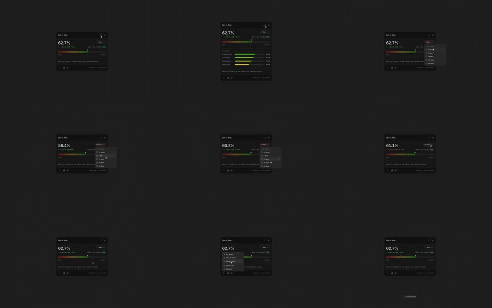

Opt-in-performance: a dark analytics widget ('Opt-In Rate 62.7%') with a red-to-green segmented health bar; a timeframe dropdown (24 hours / 7 days / 30 / 90 days) re-slices the data - the percentage and bar animate to the new value (58.4% at 7 days, 60.2% at 14, 61.1% at 30); a right-click context menu offers View as device / Copy value / Copy link.
Media
Frame-by-frame

0-25%
Widget idle: 'Opt-In Rate' header with expand + close icons, 62.7% big tabular, delta row, segmented bar mostly green with a red left segment, caption + status icons footer.
25-50%
Dropdown opens (7 days highlighted): value tweens down to 58.4%, green segment retracts, red grows - bar animates in place.
50-75%
Timeframe changes again (14 -> 30 days): 60.2% -> 61.1%; bar proportions slide smoothly each time.
75-100%
Context menu appears (View as device / Copy value / Copy link) with check/radio styling; hover highlights rows; menu closes, widget back to 62.7%.
Build prompt
Rebuild this interaction 1:1: an opt-in performance widget - dark analytics card ("Opt-In Rate 62.7%") with a red-to-green segmented health bar; a timeframe dropdown (24 hours / 7 days / 30 / 90 days) re-slices the data and the percentage + bar animate to the new value (58.4% at 7 days, 60.2% at 14, 61.1% at 30); a right-click context menu offers View as device / Copy value / Copy link.
## Integration
Integration: stack-agnostic spec - springs given as stiffness/damping, timed motions as duration + curve, canvas/shader notes are perf guidance only; map every value to your framework and animation library of choice.
## Scene
Dark widget: "Opt-In Rate" header with expand + close icons; big tabular 62.7%; delta row; segmented bar (mostly green, red left segment); caption + status icons footer. Dropdown with 24 hours / 7 days (highlighted) / 14 / 30 / 90 days. Context menu rows with check/radio styling.
## Motion spec
Pattern: data re-slice tweens + menu micro-interactions.
- Timeframe select: value tweens to the new percentage (500ms ease-out, digits counting); the green segment retracts/grows and the red segment shifts proportionally - the bar animates in place, widths sliding smoothly.
- Dropdown: opens 150ms (opacity + scale origin-top); selected row highlighted; closes on select.
- Context menu: appears at cursor (150ms); rows hover-highlight; closes on outside click; widget returns to 62.7% at the end of the demo.
## Calibration
- Value tween and bar morph share one 500ms clock - number and bar must land together.
- Menus 150ms, no bounce; dropdowns are utility, not theater.
- The big number is tabular-nums so tweening digits never jitter the layout.
## Reduced motion
Value swaps instantly; bar snaps to new proportions; menus unchanged.
## Don't miss
- The bar morphs in place (widths interpolate); never crossfade to a new bar.
- Red is always the left segment (the "bad" tail), sized to 100 - rate.
- Context menu opens on right-click (secondary action), dropdown on click - two distinct gestures.
Mechanics
trigger
dropdown select / context menu
elements
metric card, segmented health bar, timeframe dropdown, context menu
properties
value tween, segment width morph, menu open/close + row highlight